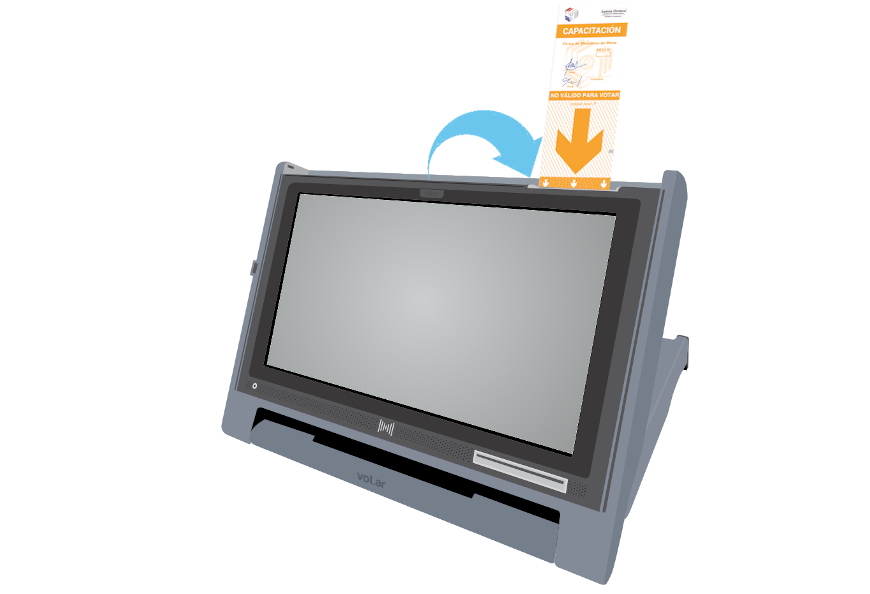
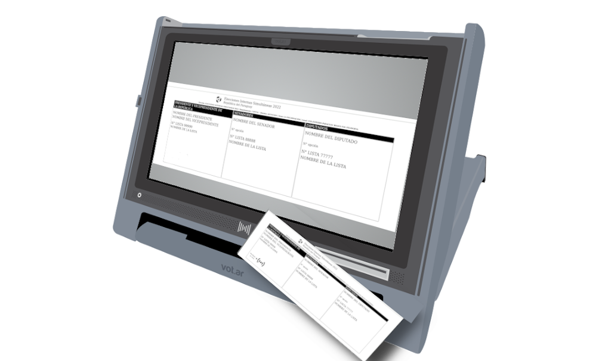
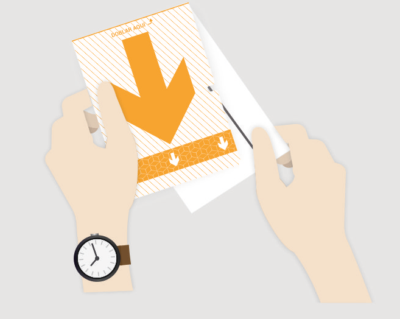
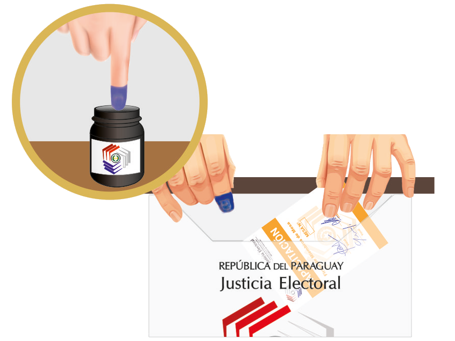

Presentá tu cédula de identidad civil a los miembros de la mesa receptora de votos, quienes te entregarán el boletín firmado por los dos vocales.

Colocá el boletín en la ranura como lo indica la flecha.

Una vez impreso el boletín, verificá que el registro electrónico de tu voto, coincida con la versión impresa, acercando el boletín al lector verificador.

Doblá el boletín de manera que se asegure el secreto del voto. Entregá al presidente de mesa para que lo firme.

Entintate el dedo índice de la mano derecha. Recibí del presidente de mesa el boletín y depositalo en la urna plástica. Retirá tu cédula de identidad civil.
Gracias por utilizar el simulador para el uso de la Máquina de votación.